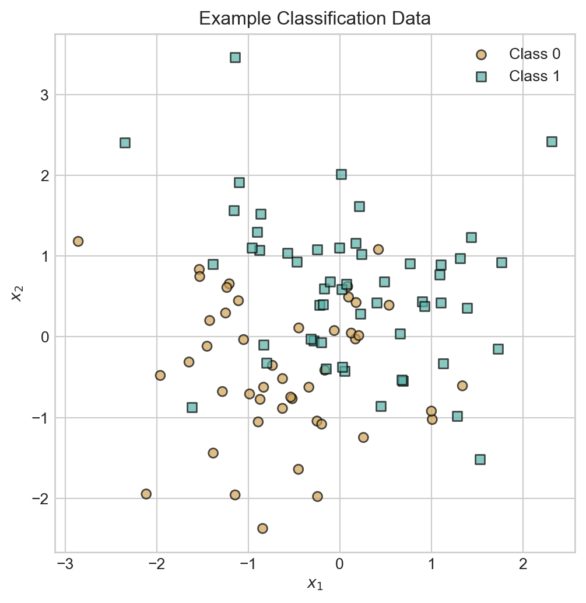
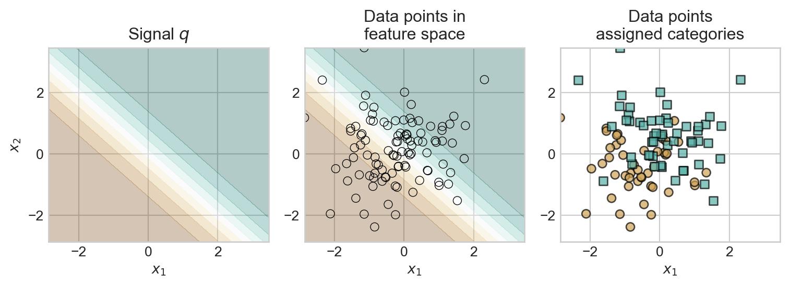
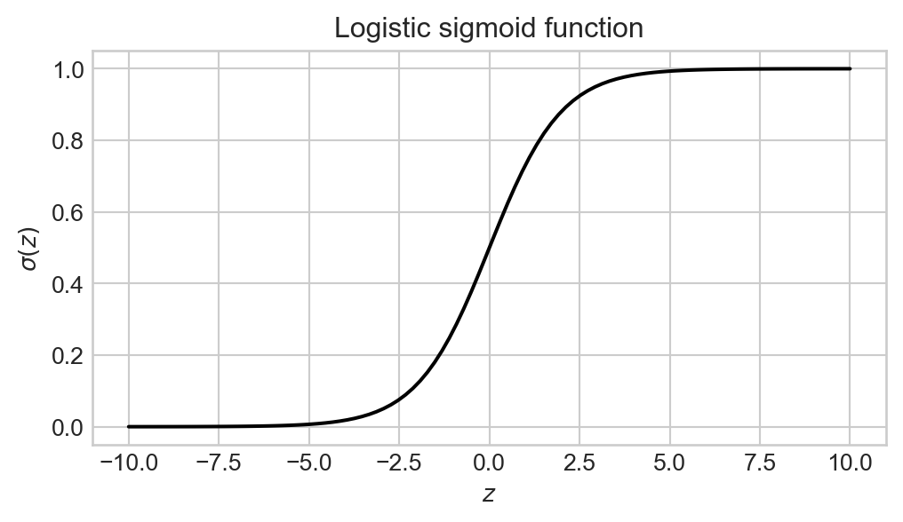
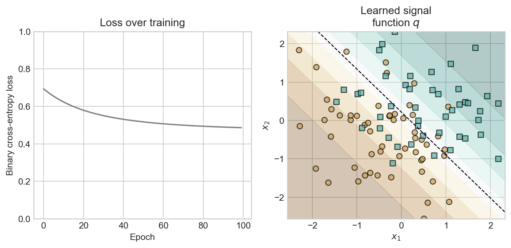
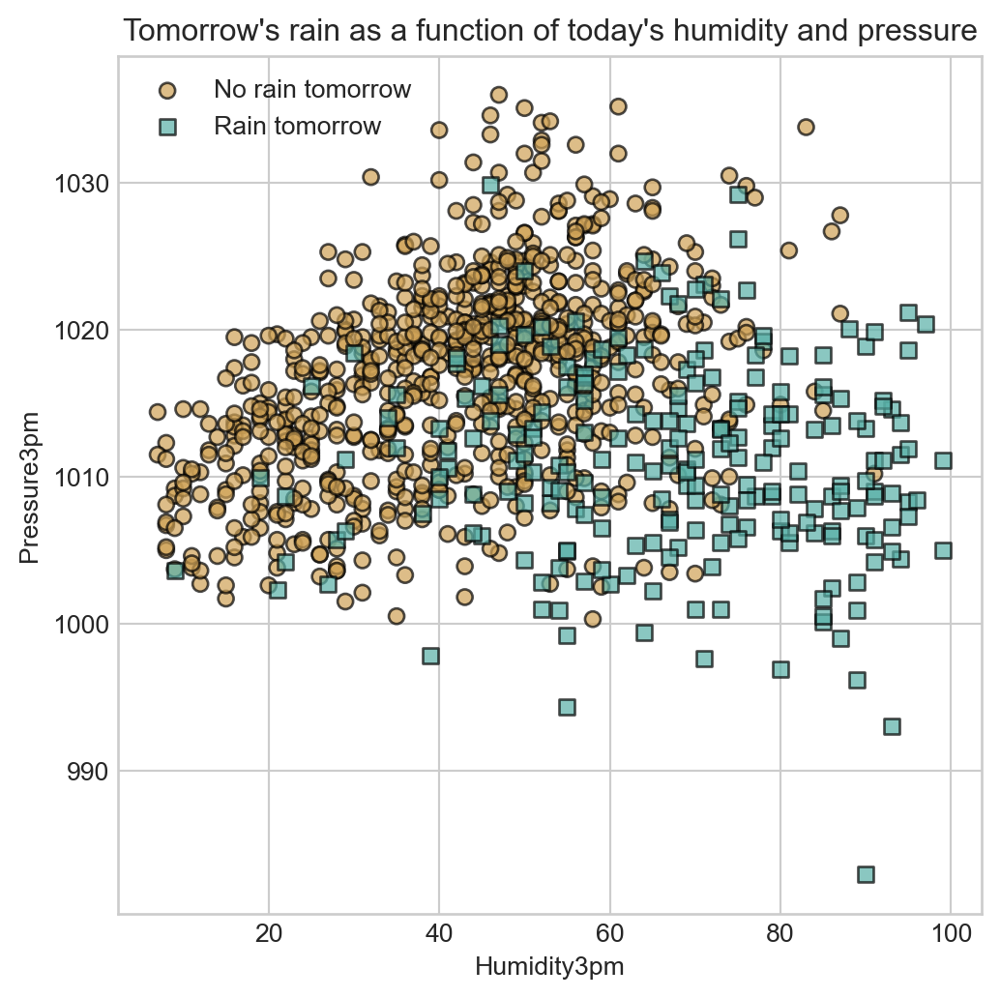
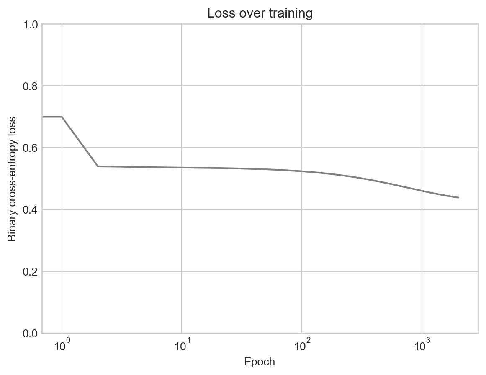

6 Introduction: Binary Labels
Predicting categories and informing decisions
Open the live notebook in Google Colab.
Introduction
In this set of notes, we’ll begin our investigation into classification. Whereas in regression we aimed to predict a number (like an amount of rainfall, or the price of a house), in classification we aim to predict a category (like whether an email is spam or not, or whether a tumor is malignant or benign).
Classification and Decision-Making
Classification is in many contexts a more practically-relevant task than regression, because classification relates directly to decision-making. For example, consider a spam filter. The goal of a spam filter is to classify incoming emails as either “spam” or “not spam”. This classification directly informs the decision of whether to deliver the email to the user’s inbox or to the spam folder.
Data = Signal + Noise: Classification Edition
When studying regression, we considered a framework in which the data \(y_i\) was generated according to a process of the form
\[ y_i = f(\mathbf{x}_i) + \epsilon_i\;, \]
where \(f\) was a deterministic function of the input \(\mathbf{x}_i\), and \(\epsilon_i\) was a random noise term. Our goal was to learn the signal \(f\) rather than the noise \(\epsilon_i\). For classification we still want to use the “signal + noise” paradigm, but the presence of categorical data means that we need to make some adjustments to the framework. In particular, since \(y_i\) is now a category rather than number, we can’t write it as the “sum” of anything, so our idea of “signal + noise” will be a bit metaphorical.
Binary Classification
In binary classification, we have two classes (e.g. “spam” vs “not spam”). We can represent the class labels as \(y_i \in \{0, 1\}\), where \(0\) represents one class and \(1\) represents the other class. Here’s an example of the kind of data we have in mind with a binary classification problem:
Code
import torch
from matplotlib import pyplot as plt
import seaborn as sns
w = torch.tensor([[0.0], [1.5], [1.5]])
X = torch.randn(100, 3)
X[:, 0] = 1.0
q = torch.sigmoid(X @ w)
y = torch.bernoulli(q)
fig, ax = plt.subplots(figsize=(6, 6))
markers = ['o', 's']
for i in range(2):
idx = (y.flatten() == i)
ax.scatter(X[idx, 1], X[idx, 2], c = y.flatten()[idx], label=f'Class {i}', edgecolor='k', marker=markers[i], cmap = 'BrBG', vmin = -0.5, vmax = 1.5, alpha = 0.7)
ax.legend()
t = ax.set(title='Example Classification Data', xlabel=r'$x_1$', ylabel=r'$x_2$')We are going to conceptualize this data as arising according to the following process:
Here’s a visualization of this process:
Code
fig, axarr = plt.subplots(1, 3, figsize=(8, 3))
x_1_grid = torch.linspace(X.min(), X.max(), 100)
x_2_grid = torch.linspace(X.min(), X.max(), 100)
xx, yy = torch.meshgrid(x_1_grid, x_2_grid, indexing='ij')
grid = torch.cat([torch.ones_like(xx).reshape(-1, 1), xx.reshape(-1, 1), yy.reshape(-1, 1)], dim=1)
with torch.no_grad():
q_grid = torch.sigmoid(grid @ w).reshape(xx.shape)
axarr[0].contourf(xx, yy, q_grid, levels=torch.linspace(0, 1, steps=10), alpha=0.3, cmap='BrBG', extent = (x_1_grid.min(), x_1_grid.max(), x_2_grid.min(), x_2_grid.max()))
axarr[1].contourf(xx, yy, q_grid, levels=torch.linspace(0, 1, steps=10), alpha=0.3, cmap='BrBG')
sns.scatterplot(x=X[:, 1], y=X[:, 2], color = "black", ax=axarr[1], legend=False, edgecolor='k', facecolor = "none")
for i in range(2):
idx = (y.flatten() == i)
axarr[2].scatter(X[idx, 1], X[idx, 2], c = y.flatten()[idx], label=f'Class {i}', edgecolor='k', marker=markers[i], cmap = 'BrBG', vmin = -0.5, vmax = 1.5, alpha = 0.7)
for i, ax in enumerate(axarr):
ax.set(xlim=(x_1_grid.min(), x_1_grid.max()), ylim=(x_2_grid.min(), x_2_grid.max()))
ax.set(xlabel=r'$x_1$')
if i == 0:
ax.set(ylabel=r'$x_2$')
else:
ax.set(ylabel='')
# plt.colorbar(axarr[1].collections[0], ax=axarr[0], label='Probability of label 1 $q(\mathbf{x})$')
axarr[0].set(title='Signal $q$')
axarr[1].set(title='Data points in\nfeature space')
axarr[2].set(title='Data points\nassigned categories')
plt.tight_layout()
Likelihood Function for Binary Classification
Suppose that we evaluate the signal function \(q\) at some point \(\mathbf{x}\), giving us a probability \(q(\mathbf{x})\) that a data point with features \(\mathbf{x}\) belongs to class 1. We can then write the probability of that data point belonging to class \(y\in \{0,1\}\) as
\[ \begin{align} p_Y(y; q(\mathbf{x})) = \begin{cases} q(\mathbf{x}) & \text{if } y = 1 \\ 1 - q(\mathbf{x}) & \text{if } y = 0 \end{cases} \end{align} \tag{6.1}\]
Although it might seem a bit unnecessarily complicated at first, it turns out that a very useful way to write this
The notation \(p_Y(y; q(\mathbf{x})) = q(\mathbf{x})^y (1-q(\mathbf{x}))^{1-y}\) may look a bit unnecessarily fancy, but convince yourself that we have \(p_Y(0; q(\mathbf{x})) = 1-q(\mathbf{x})\) and \(p_Y(1; q(\mathbf{x})) = q(\mathbf{x})\), as in Equation 6.1.
\[ \begin{aligned} p_Y(y; q(\mathbf{x})) &= q(\mathbf{x})^y (1 - q(\mathbf{x}))^{1 - y}\;. \end{aligned} \tag{6.2}\]
This is an instance of the Bernoulli distribution with parameter \(q(\mathbf{x})\):
Definition 6.1 (Bernoulli Distribution) Random variable \(Y\) is said to be Bernoulli distributed with parameter \(q\) if it takes value \(1\) with probability \(q\) and value \(0\) with probability \(1-q\).
The probability mass function of a Bernoulli distribution is given by
\[ p_Y(y; q) = \mathbb{P}(Y = y;q) = q^y (1-q)^{1-y}\;. \]
We can now write down the likelihood function for some data consisting of a feature matrix \(\mathbf{X}\) and a vector of class labels \(\mathbf{y}\) given a signal function \(q\) by multiplying together the probabilities for each data point:
\[ \begin{aligned} L(\mathbf{X}, \mathbf{y}; q) &= \prod_{i = 1}^n p_Y(y_i; q(\mathbf{x})) \\ &= \prod_{i = 1}^n q(\mathbf{x}_i)^{y_i} (1 - q(\mathbf{x}_i))^{1 - y_i}\;. \end{aligned} \]
Just like with regression, it’s usually more convenient to work with the log-likelihood:
\[ \begin{aligned} \mathcal{L}(\mathbf{X}, \mathbf{y}; q) &= \log L(\mathbf{X}, \mathbf{y}; q) \\ &= \sum_{i = 1}^n \left[y_i \log q(\mathbf{x}_i) + (1 - y_i) \log (1 - q(\mathbf{x}_i))\right]\;. \end{aligned} \]
Since we customarily minimize when working with optimization problems, we aim to minimize the negative log-likelihood, which is given by
\[ \begin{aligned} -\mathcal{L}(\mathbf{X}, \mathbf{y}; q) &= -\sum_{i = 1}^n \left[y_i \log q(\mathbf{x}_i) + (1 - y_i) \log (1 - q(\mathbf{x}_i))\right]\;. \end{aligned} \tag{6.3}\]
Definition 6.2 (Binary Cross-Entropy Loss) The binary cross entropy between a collection of predicted probabilities \(\mathbf{q}= (q_1,q_2,\ldots,q_n) \in [0,1]^n\) and true labels \(\mathbf{y}= (y_1,y_2,\ldots,y_n) \in \{0,1\}^n\) is given by the formula
\[ \mathrm{CE}(\mathbf{y}, \mathbf{q}) = -\sum_{i = 1}^n \left[y_i \log q_i + (1 - y_i) \log (1 - q_i)\right]\;. \tag{6.4}\]
While torch implements some bespoke cross-entropy loss functions optimized for various cases, it’s also a quick formula to implement by hand:
def binary_cross_entropy(q, y):
return -(y * torch.log(q) + (1 - y) * torch.log(1 - q)).mean()So, using the binary cross entropy, our loss function for classification in this model is given by
\[ \begin{aligned} -\mathcal{L}(\mathbf{X}, \mathbf{y}; q) = \mathrm{CE}(\mathbf{y}, \mathbf{q}(\mathbf{X}))\;, \end{aligned} \]
where here we are letting \(\mathbf{q}(\mathbf{X}) = (q(\mathbf{x}_1), q(\mathbf{x}_2), \ldots, q(\mathbf{x}_n))\) be the vector of predicted probabilities for each data point. We’d like to find a choice of the signal function \(q\) that makes this loss as small as possible, which as usual is equivalent to maximizing the log-likelihood.
Binary Logistic Regression
To complete an algorithm for binary classification, we need to specify the set of possible signal functions \(q\) that we are going to search over. In logistic regression, we consider signal functions which consist of applying the logistic sigmoid to a linear function of the features.
Definition 6.3 (Logistic Sigmoid) The logistic sigmoid \(\sigma: \mathbb{R}\rightarrow (0, 1)\) is the function with formula
\[ \sigma(z) = \frac{1}{1 + e^{-z}}\;. \tag{6.5}\]

Plot of the logistic sigmoid \(\sigma\).
Here’s a quick implementation:
def sigmoid(z):
return 1 / (1 + torch.exp(-z))The logistic sigmoid sends any numerical input to a value between 0 and 1, which makes it a natural choice for modeling probabilities. In logistic regression, we apply the logistic sigmoid to a linear function of the features, which gives us the following form for the signal function \(q\):
\[ \begin{aligned} q(\mathbf{x}_i) = \sigma(\mathbf{x}_i^\top \mathbf{w})\;. \end{aligned} \tag{6.6}\]
If we insert Equation 6.6 into Equation 6.4, we get the following expression for the cross-entropy of the predictions and data for a given parameter vector \(\mathbf{w}\):
\[ \begin{aligned} -\mathcal{L}(\mathbf{X}, \mathbf{y}; \mathbf{w}) &= \mathrm{CE}(\mathbf{y}, \mathbf{q}(\mathbf{X})) \\ &= \mathrm{CE}(\mathbf{y}, \sigma(\mathbf{X}\mathbf{w})) &\quad \text{(sigmoid applied entrywise to $\mathbf{X}\mathbf{w}$)} \\ &= -\sum_{i = 1}^n \left[y_i \log \sigma(\mathbf{x}_i^\top \mathbf{w}) + (1 - y_i) \log (1 - \sigma(\mathbf{x}_i^\top \mathbf{w}))\right]\;. \end{aligned} \]
Much like with linear regression, it’s typical to normalize by the number of data points \(n\) to get an average log-likelihood per data point, which gives our final formula for the loss function in binary logistic regression:
This normalization is why we used
.mean() instead of .sum() in the binary_cross_entropy function above.\[ \begin{aligned} \mathrm{Loss} &= \frac{1}{n} \sum_{i = 1}^n \left[y_i \log \sigma(\mathbf{x}_i^\top \mathbf{w}) + (1 - y_i) \log (1 - \sigma(\mathbf{x}_i^\top \mathbf{w}))\right]\;. \end{aligned} \tag{6.7}\]
Implementation of Binary Logistic Regression
To implement binary logistic regression, we can use largely the same machinery that we used for linear regression. The forward method will compute the value of the signal function \(q(\mathbf{x}_i) = \sigma(\mathbf{x}_i^\top \mathbf{w})\) for each data point.
class BinaryLogisticRegression:
def __init__(self, n_features):
self.w = torch.zeros(n_features, 1, requires_grad=True)
def forward(self, X):
return sigmoid(X @ self.w) Now we’re ready to train the model using gradient descent on the parameters \(\mathbf{w}\). The gradient of a single term in the binary cross-entropy loss is given by the formula
\[ \begin{aligned} \nabla \mathcal{L}(\mathbf{x}_i, y_i; \mathbf{w}) = (\sigma(\mathbf{x}_i^\top \mathbf{w}) - y_i) \mathbf{x}_i\;, \end{aligned} \]
which means that the gradient of the full loss is given by
\[ \begin{aligned} \nabla \mathcal{L}(\mathbf{X}, \mathbf{y}; \mathbf{w}) = \frac{1}{n} \sum_{i = 1}^n (\sigma(\mathbf{x}_i^\top \mathbf{w}) - y_i) \mathbf{x}_i\;. \end{aligned} \]
Let’s build in these calculations to a class for performing gradient descent optimization.
class GradientDescentOptimizer:
def __init__(self, model, lr=0.1):
self.model = model
self.lr = lr
def grad_func(self, X, y):
q = self.model.forward(X)
return 1/X.shape[0] * ((q - y).T @ X).T
def step(self, X, y):
grad = self.grad_func(X, y)
with torch.no_grad():
self.model.w -= self.lr * gradmodel = BinaryLogisticRegression(n_features=3)
opt = GradientDescentOptimizer(model, lr=0.1)
losses = []
for epoch in range(100):
q = model.forward(X)
loss = binary_cross_entropy(q, y)
losses.append(loss.item())
opt.step(X, y)Let’s visualize the learned signal function:
Code
x_1_grid = torch.linspace(X.min(), X.max(), 100)
x_2_grid = torch.linspace(X.min(), X.max(), 100)
xx, yy = torch.meshgrid(x_1_grid, x_2_grid, indexing='ij')
grid = torch.cat([torch.ones_like(xx).reshape(-1, 1), xx.reshape(-1, 1), yy.reshape(-1, 1)], dim=1)
with torch.no_grad():
q_grid = model.forward(grid).reshape(xx.shape)
fig, axarr = plt.subplots(1, 2, figsize=(8, 4))
axarr[0].plot(losses, color = "grey")
axarr[0].set(title='Loss over training', xlabel='Epoch', ylabel='Binary cross-entropy loss')
axarr[0].set_ylim(0, 1)
axarr[1].set(title='Learned signal\nfunction $q$', xlabel=r'$x_1$', ylabel=r'$x_2$')
axarr[1].contourf(xx, yy, q_grid, levels=torch.linspace(0, 1, steps=10), alpha=0.3, cmap='BrBG', extent = (x_1_grid.min(), x_1_grid.max(), x_2_grid.min(), x_2_grid.max()))
axarr[1].contour(xx, yy, q_grid, levels=[0.5], colors='k', linewidths=1, extent = (x_1_grid.min(), x_1_grid.max(), x_2_grid.min(), x_2_grid.max()), linestyles='--')
for i in range(2):
idx = (y.flatten() == i)
axarr[1].scatter(X[idx, 1], X[idx, 2], c = y.flatten()[idx], label=f'Class {i}', edgecolor='k', marker=markers[i], cmap = 'BrBG', vmin = -0.5, vmax = 1.5, alpha = 0.7)
plt.tight_layout()
We can obtain predictions from the model by thresholding the signal function, for example at \(q^* = 0.5\) as shown in the contour plot.
q = model.forward(X)
y_pred = (q >= 0.5).float()
# accuracy
accuracy = (y_pred == y).float().mean()
print(f'Training accuracy: {accuracy:.3f}')Training accuracy: 0.760As usual, to fully assess the classifier we would evaluate the accuracy on a held-out test set.
Data Case Study
As an empirical test of our logistic regression classifier, let’s train a model to predict rainfall based on the previous day’s weather.
import pandas as pd
url = "https://raw.githubusercontent.com/middcs/data-science-notes/refs/heads/main/data/australia-weather/weatherAUS.csv"
df = pd.read_csv(url)
df.head()
# df["Pressure9am"] = df["Pressure9am"]/1e3
# df["Humidity3pm"] = df["Humidity3pm"]/100
df.dropna(subset=['RainTomorrow', 'Humidity3pm', 'Pressure3pm'], inplace=True)For the purposes of this example, we’ll use just two features: the humidity at 3pm and the pressure at 3pm, and use these to predict whether or not rain occurs the next day.
fig, ax = plt.subplots(figsize=(6, 6))
subset = df.head(1000)
y = subset['RainTomorrow'].apply(lambda x: 1 if x == 'Yes' else 0).to_numpy().reshape(-1, 1)
X = subset[['Humidity3pm', 'Pressure3pm']].to_numpy()
for i, label in enumerate(["No rain tomorrow", "Rain tomorrow"]):
idx = y.flatten() == i
ax.scatter(X[idx, 0], X[idx, 1], c = y.flatten()[idx], label=f'{label}', edgecolor='k', marker=markers[i], cmap = 'BrBG', vmin = -0.5, vmax = 1.5, alpha = 0.7)
ax.set(xlabel='Humidity3pm', ylabel='Pressure3pm')
plt.legend()
t = plt.title("Tomorrow's rain as a function of today's humidity and pressure")
We’ll start our modeling pipeline by producing a feature matrix and label vector from the data.
X = df[['Humidity3pm', 'Pressure3pm']].to_numpy()
y = (df['RainTomorrow'] == 'Yes').to_numpy().astype(float).reshape(-1, 1)Now we’ll perform a train-test split to evaluate the model’s performance on held-out data.
train_frac = 0.8
n = X.shape[0]
n_train = int(train_frac * n)
X_train = X[:n_train, :]
y_train = y[:n_train, :]
X_test = X[n_train:, :]
y_test = y[n_train:, :]Now we’re ready to train the logistic regression model.
n_features = X_train.shape[1] + 1 # +1 for intercept
X_train_aug = torch.ones((X_train.shape[0], n_features))
X_train_aug[:, 1:] = torch.tensor(X_train, dtype=torch.float32)
y_train_tensor = torch.tensor(y_train, dtype=torch.float32)
model = BinaryLogisticRegression(n_features=n_features)
opt = GradientDescentOptimizer(model, lr=0.00001)
losses = []
for epoch in range(20000):
q = model.forward(X_train_aug)
loss = binary_cross_entropy(q, y_train_tensor)
losses.append(loss.item())
opt.step(X_train_aug, y_train_tensor)Code
plt.plot(losses, color = "grey")
t = plt.title('Loss over training')
plt.xlabel('Epoch')
plt.ylabel('Binary cross-entropy loss')
plt.ylim(0, 1)
plt.semilogx()
Let’s plot the learned signal function \(q\) in feature space, along with a selection from the test data:
Code
x1_grid = torch.linspace(X[:,0].min(), X[:,0].max(), 100)
x2_grid = torch.linspace(X[:,1].min(), X[:,1].max(), 100)
xx1, xx2 = torch.meshgrid(x1_grid, x2_grid, indexing='ij')
grid = torch.cat([torch.ones_like(xx1).reshape(-1, 1), xx1.reshape(-1, 1), xx2.reshape(-1, 1)], dim=1)
with torch.no_grad():
q_grid = model.forward(grid).reshape(xx1.shape)
fig, ax = plt.subplots(figsize=(6, 6))
ax.contour(xx1, xx2, q_grid, levels=[0.5], colors='k', linewidths=1, extent = (x1_grid.min(), x1_grid.max(), x2_grid.min(), x2_grid.max()), linestyles='--')
ax.contourf(xx1, xx2, q_grid, levels=torch.linspace(0, 1, steps=10), alpha=0.3, cmap='BrBG', extent = (x1_grid.min(), x1_grid.max(), x2_grid.min(), x2_grid.max()))
ax.set(title='Learned decision boundary', xlabel='Humidity3pm', ylabel='Pressure3pm')
for i, label in enumerate(["No rain tomorrow", "Rain tomorrow"]):
idx = (y_test[:1000, 0] == i)
ax.scatter(X_test[:1000, 0][idx], X_test[:1000, 1][idx], c = y_test[:1000, 0][idx], label=f'{label}', edgecolor='k', marker=markers[i], cmap = 'BrBG', vmin = -0.5, vmax = 1.5, alpha = 0.7)
plt.legend()
To evaluate this model on the test set, we need to evaluate the model on the test features and threshold the results to obtain class predictions.
# obtain the probabilities q_test
X_test_aug = torch.ones((X_test.shape[0], n_features))
X_test_aug[:, 1:] = torch.tensor(X_test, dtype=torch.float32)
y_test_tensor = torch.tensor(y_test, dtype=torch.float32)
q_test = model.forward(X_test_aug)
# obtain class predictions via thresholding and compute accuracy
y_test_pred = (q_test >= 0.5).float()
accuracy_test = (y_test_pred == y_test_tensor).float().mean()
print(f'Test accuracy: {accuracy_test:.3f}')Test accuracy: 0.840This accuracy is slightly better than the result we would obtain by always guessing that it won’t rain:
baseline_accuracy = (y_test_tensor == 0).float().mean()
print(f'Baseline accuracy (always predict no rain): {baseline_accuracy:.3f}')Baseline accuracy (always predict no rain): 0.794Our learned classifier does slightly better than baseline in predicting whether or not will rain tomorrow, as measured by accuracy on the test set.
© Phil Chodrow, 2025